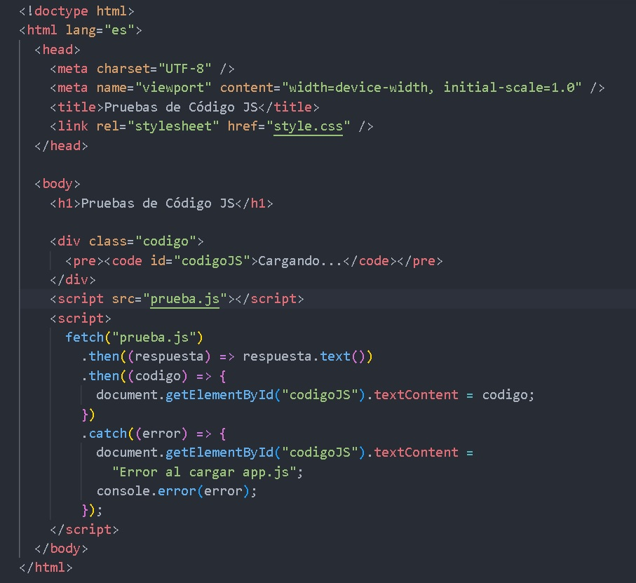

JavaScript
Fundamentos de JavaScript para crear páginas web interactivas.
¿Qué es JavaScript?
JavaScript es un lenguaje de programación que permite agregar comportamiento e interactividad a nuestras páginas web. Es un lenguaje interpretado, versátil y muy popular en el desarrollo web moderno.
¿Por qué aprender JavaScript?
JavaScript te permite:
- Crear efectos visuales y animaciones
- Validar formularios antes de enviarlos
- Responder a acciones del usuario
- Modificar el contenido de la página dinámicamente
- Comunicarse con servidores sin recargar la página
Para probar los códigos crear 2 archivos en Visual Studio: prueba.html y prueba.js

Código JS para probar
<script>
fetch("prueba.js")
.then((respuesta) => respuesta.text())
.then((codigo) => {
document.getElementById("codigoJS").textContent = codigo;
})
.catch((error) => {
document.getElementById("codigoJS").textContent =
"Error al cargar prueba.js";
console.error(error);
});
</script>HTML + CSS + JavaScript
¿Cómo incluir JavaScript?
Hay tres formas de usar JavaScript:
-
En atributos HTML:
<button onclick="alert('Hola')"> -
En etiqueta script:
<script>...código...</script> -
En archivo externo:
<script src="script.js">
Variables
Las variables sirven para guardar información que podemos utilizar posteriormente.
¿Qué es una variable?
Una variable es un contenedor que guarda un valor. Podemos compararlo con una caja en la que guardamos algo. La caja tiene un nombre y adentro hay un valor.
let nombre = "Juan";
let edad = 20;
let altura = 1.75;
console.log(nombre);
console.log(edad);
console.log(altura);Palabras clave para variables
- let: Variable que puede cambiar.
- const: Variable que no puede cambiar.
-
var:
Variable antigua. Se recomienda utilizar
letoconst.
let ciudad = "Córdoba";
// puede cambiar
ciudad = "Villa Dolores";
const PI = 3.14159;
// NO puede cambiar
const persona = {
nombre: "Ana",
edad: 25
};
persona.edad = 26;
console.log(persona);
Usa const por defecto.
Solo usa let cuando necesites cambiar
el valor de la variable.
Tipos de datos
JavaScript puede trabajar con diferentes tipos de información.
String
Texto
"Hola mundo"
Number
Números
25
Boolean
Verdadero o falso
true
Array
Listas de valores
[1, 2, 3]
Object
Objetos complejos
{nombre: "Ana"}
null / undefined
Sin valor
null
// String
const nombre = "Juan";
const saludo = "Hola";
const mensaje = `Bienvenido ${nombre}`;
// Number
const edad = 25;
const precio = 19.99;
const negativo = -10;
// Boolean
const esEstudiante = true;
const tieneLicencia = false;
// typeof
console.log(typeof nombre);
console.log(typeof edad);
console.log(typeof esEstudiante);Operadores
Los operadores permiten realizar operaciones matemáticas y comparaciones.
Operadores Aritméticos
Se utilizan para realizar operaciones matemáticas.
let a = 10;
let b = 5;
console.log(a + b);
console.log(a - b);
console.log(a * b);
console.log(a / b);
console.log(a % b);
console.log(a ** 2);Operadores de Comparación
Comparan valores y devuelven
true o false.
console.log(10 > 5);
console.log(10 < 5);
console.log(10 >= 10);
console.log(10 <= 5);
console.log(10 == 10);
console.log(10 != 5);
console.log(10 === "10");
console.log(10 !== "10");Operadores Lógicos
Combinan condiciones booleanas.
const edad = 25;
const tieneDocumento = true;
// AND
console.log(edad >= 18 && tieneDocumento);
// OR
console.log(edad < 18 || tieneDocumento);
// NOT
console.log(!tieneDocumento);Condicionales
Los condicionales permiten ejecutar código dependiendo de una condición.
if / else
Si la condición es verdadera se ejecuta un bloque.
const edad = 20;
if (edad >= 18) {
console.log("Sos mayor de edad");
} else {
console.log("Sos menor de edad");
}else if
Permite trabajar con múltiples condiciones.
const calificacion = 8;
if (calificacion >= 9) {
console.log("Excelente");
} else if (calificacion >= 7) {
console.log("Bueno");
} else if (calificacion >= 5) {
console.log("Aprobado");
} else {
console.log("Desaprobado");
}switch
Permite comparar un valor con diferentes casos.
const dia = 3;
let nombreDia;
switch (dia) {
case 1:
nombreDia = "Lunes";
break;
case 2:
nombreDia = "Martes";
break;
case 3:
nombreDia = "Miércoles";
break;
default:
nombreDia = "Día inválido";
}
console.log(nombreDia);Construi un código para que dados 3 números se determine el mayor.
Funciones en JavaScript
Una función es un bloque de código que podemos crear una vez y reutilizar todas las veces que necesitemos.
Las funciones permiten organizar mejor nuestros programas, evitar repetir código y dividir un problema grande en partes más pequeñas.
¿Qué es una función?
Podemos imaginar una función como una pequeña máquina: recibe datos, realiza una tarea y, si es necesario, devuelve un resultado.
Datos
↓
Función
↓
Proceso
↓
ResultadoCrear una función
Para crear una función podemos utilizar la palabra
function.
function saludar() {
console.log("Hola mundo");
}
saludar();
La función se ejecuta cuando escribimos su nombre seguido de
paréntesis:
saludar().
Funciones con parámetros
Una función puede recibir información mediante parámetros.
Los parámetros funcionan como variables que reciben los datos enviados cuando llamamos a la función.
function saludar(nombre) {
console.log("Hola " + nombre);
}
saludar("Juan");
saludar("María");
saludar("Pedro");
En este ejemplo, nombre es el parámetro.
Los valores "Juan", "María" y
"Pedro" son los argumentos.
Parámetros y argumentos
Es importante diferenciar estos dos conceptos:
- Parámetro: variable definida en la función.
- Argumento: valor que enviamos a la función.
function sumar(a, b) {
return a + b;
}
sumar(10, 5);En este ejemplo:
aybson parámetros.10y5son argumentos.
Devolver un resultado con return
La palabra return permite devolver un valor desde
una función.
function sumar(a, b) {
return a + b;
}
const resultado = sumar(10, 5);
console.log(resultado);El resultado de la función es 15.
Podemos guardar el resultado de una función en una variable:
const resultado = sumar(20, 30);
console.log(resultado);Funciones para realizar operaciones
Podemos crear funciones para realizar diferentes operaciones matemáticas.
function sumar(a, b) {
return a + b;
}
function restar(a, b) {
return a - b;
}
function multiplicar(a, b) {
return a * b;
}
function dividir(a, b) {
return a / b;
}
console.log(sumar(10, 5));
console.log(restar(10, 5));
console.log(multiplicar(10, 5));
console.log(dividir(10, 5));Funciones con condiciones
Una función también puede utilizar estructuras
if, else y otras instrucciones
de JavaScript.
function dividir(a, b) {
if (b === 0) {
return "No se puede dividir por cero";
}
return a / b;
}
console.log(dividir(10, 2));
console.log(dividir(10, 0));Ejemplo: encontrar el número mayor
Podemos crear una función que reciba tres números y devuelva cuál es el mayor.
function mayorDeTres(a, b, c) {
if (a > b && a > c) {
return a;
}
if (b > a && b > c) {
return b;
}
return c;
}
console.log(mayorDeTres(10, 25, 15));Parámetros con valores predeterminados
Podemos establecer un valor que se utilizará cuando no enviemos un argumento.
function saludar(nombre = "Amigo") {
console.log(`Hola, ${nombre}!`);
}
saludar();
saludar("Juan");
La primera llamada utiliza el valor predeterminado
"Amigo".
Funciones flecha
JavaScript también permite crear funciones utilizando una sintaxis más corta llamada función flecha.
const multiplicar = (a, b) => {
return a * b;
};
console.log(multiplicar(3, 4));Funciones flecha en versión corta
Cuando una función solamente necesita devolver una expresión, podemos escribirla de una manera más sencilla.
const sumar = (a, b) => a + b;
const restar = (a, b) => a - b;
const multiplicar = (a, b) => a * b;
console.log(sumar(10, 5));
console.log(restar(10, 3));
console.log(multiplicar(4, 5));Funciones con un solo parámetro
Cuando una función flecha tiene un solo parámetro, podemos escribirla sin paréntesis.
const doble = numero => numero * 2;
console.log(doble(5));
console.log(doble(10));Funciones que realizan acciones
No todas las funciones necesitan devolver un valor. Algunas simplemente realizan una acción.
function mostrarMensaje(mensaje) {
console.log(mensaje);
}
mostrarMensaje("Bienvenido al curso de JavaScript");Ejemplo: calcular un promedio
Podemos crear una función para resolver un problema específico, como calcular el promedio de tres números.
function calcularPromedio(n1, n2, n3) {
return (n1 + n2 + n3) / 3;
}
const promedio = calcularPromedio(8, 9, 10);
console.log("Promedio:", promedio);Una función puede utilizar otra función
Podemos combinar funciones para construir soluciones más grandes a partir de pequeñas partes.
function sumar(a, b) {
return a + b;
}
function duplicar(numero) {
return numero * 2;
}
const resultado = sumar(10, 5);
console.log(duplicar(resultado));Ejemplo completo
En el siguiente ejemplo utilizamos varias funciones para realizar diferentes operaciones.
function sumar(a, b) {
return a + b;
}
function restar(a, b) {
return a - b;
}
function multiplicar(a, b) {
return a * b;
}
function dividir(a, b) {
if (b === 0) {
return "No se puede dividir por cero";
}
return a / b;
}
console.log("Suma:", sumar(20, 10));
console.log("Resta:", restar(20, 10));
console.log("Multiplicación:", multiplicar(20, 10));
console.log("División:", dividir(20, 10));📌 Para recordar
Una función puede recibir datos, procesarlos y devolver un resultado.
function nombreFuncion(parametros) {
// instrucciones
return resultado;
}- function: permite declarar una función.
- Nombre: identifica la función.
- Parámetros: datos que recibe.
- Argumentos: valores que enviamos.
- return: devuelve un resultado.
- (): permiten llamar o ejecutar la función.
🧠 ¿Cómo pensar una función?
DATOS
↓
PARÁMETROS
↓
FUNCIÓN
↓
PROCESO
↓
RETURN
↓
RESULTADO🎯 Ejercicios
Ejercicio 1
Crea una función llamada saludar que reciba
un nombre y muestre:
Hola JuanEjercicio 2
Crea una función llamada cuadrado que reciba
un número y devuelva su cuadrado.
Ejercicio 3
Crea una función llamada mayor que reciba
dos números y devuelva cuál es el mayor.
Ejercicio 4
Crea una función llamada esPar que reciba
un número y devuelva true si es par y
false si es impar.
Ejercicio 5
Crea una función flecha que reciba un número y devuelva su doble.
Arrays en JavaScript
Los arrays permiten guardar varios valores dentro de una misma variable.
Son ideales para trabajar con listas de datos como nombres, frutas, números, notas, jugadores, productos y mucho más.
¿Qué es un Array?
Un array es una estructura que permite almacenar varios elementos de forma ordenada.
Cada elemento ocupa una posición llamada índice.
const frutas = [
"Manzana",
"Banana",
"Naranja"
];
console.log(frutas);Índices
En JavaScript, los índices comienzan en 0.
Índice: 0 1 2
↓ ↓ ↓
Frutas: Manzana Banana Naranjaconst frutas = [
"Manzana",
"Banana",
"Naranja"
];
console.log(frutas[0]);
console.log(frutas[1]);
console.log(frutas[2]);Modificar elementos
Podemos cambiar un elemento utilizando su índice.
const frutas = [
"Manzana",
"Banana",
"Naranja"
];
frutas[1] = "Pera";
console.log(frutas);Conocer la cantidad de elementos
La propiedad length nos indica cuántos
elementos contiene el array.
const frutas = [
"Manzana",
"Banana",
"Naranja"
];
console.log(frutas.length);Obtener el último elemento
Podemos obtener el último elemento utilizando
length - 1.
const frutas = [
"Manzana",
"Banana",
"Naranja"
];
console.log(frutas[frutas.length - 1]);Agregar elementos con push()
push() agrega uno o más elementos
al final del array.
const frutas = [
"Manzana",
"Banana"
];
frutas.push("Naranja");
console.log(frutas);Eliminar elementos con pop()
pop() elimina el último elemento.
const frutas = [
"Manzana",
"Banana",
"Naranja"
];
frutas.pop();
console.log(frutas);Agregar al principio con unshift()
unshift() agrega elementos al comienzo
del array.
const frutas = [
"Banana",
"Naranja"
];
frutas.unshift("Manzana");
console.log(frutas);Eliminar el primer elemento con shift()
shift() elimina el primer elemento del array.
const frutas = [
"Manzana",
"Banana",
"Naranja"
];
frutas.shift();
console.log(frutas);Recorrer un array
Podemos utilizar un bucle for para recorrer
todos los elementos.
const frutas = [
"Manzana",
"Banana",
"Naranja"
];
for (let i = 0; i < frutas.length; i++) {
console.log(frutas[i]);
}Recorrer con for...of
for...of permite recorrer directamente
los valores del array.
const frutas = [
"Manzana",
"Banana",
"Naranja"
];
for (const fruta of frutas) {
console.log(fruta);
}Arrays de números
Un array también puede almacenar números.
const numeros = [
10,
20,
30,
40,
50
];
console.log(numeros[0]);
console.log(numeros[3]);Sumar los elementos
Podemos recorrer un array y acumular sus valores.
const numeros = [
10,
20,
30,
40
];
let suma = 0;
for (const numero of numeros) {
suma += numero;
}
console.log("Suma:", suma);Buscar elementos con includes()
includes() permite comprobar si un elemento
existe dentro del array.
Devuelve true o false.
const frutas = [
"Manzana",
"Banana",
"Naranja"
];
console.log(frutas.includes("Banana"));
console.log(frutas.includes("Pera"));Buscar la posición con indexOf()
indexOf() devuelve la posición de un elemento.
Si no encuentra el elemento devuelve -1.
const frutas = [
"Manzana",
"Banana",
"Naranja"
];
console.log(frutas.indexOf("Banana"));
console.log(frutas.indexOf("Pera"));Unir elementos con join()
join() permite convertir los elementos
del array en un texto.
const frutas = [
"Manzana",
"Banana",
"Naranja"
];
const texto = frutas.join(", ");
console.log(texto);Transformar elementos con map()
map() permite crear un nuevo array
transformando cada elemento.
const numeros = [
1,
2,
3,
4,
5
];
const dobles = numeros.map(numero => numero * 2);
console.log(dobles);Filtrar elementos con filter()
filter() crea un nuevo array solamente
con los elementos que cumplen una condición.
const numeros = [
5,
10,
15,
20,
25
];
const mayores = numeros.filter(numero => numero > 10);
console.log(mayores);Arrays de objetos
Los arrays pueden contener objetos. Esta estructura es muy utilizada en aplicaciones reales.
const jugadores = [
{
nombre: "Juan",
puntos: 10
},
{
nombre: "Pedro",
puntos: 8
},
{
nombre: "María",
puntos: 12
}
];
console.log(jugadores[0].nombre);
console.log(jugadores[2].puntos);Recorrer un array de objetos
Podemos utilizar for...of para recorrer
todos los objetos.
const jugadores = [
{
nombre: "Juan",
puntos: 10
},
{
nombre: "Pedro",
puntos: 8
},
{
nombre: "María",
puntos: 12
}
];
for (const jugador of jugadores) {
console.log(
jugador.nombre + ": " + jugador.puntos
);
}Ejemplo completo: notas
Vamos a utilizar un array para guardar las notas de un alumno, calcular la cantidad de notas, la suma y el promedio.
const notas = [
8,
7,
10,
9,
6
];
let suma = 0;
for (const nota of notas) {
suma += nota;
}
const promedio = suma / notas.length;
console.log("Cantidad:", notas.length);
console.log("Suma:", suma);
console.log("Promedio:", promedio);📌 Métodos importantes
-
push()→ agrega elementos al final. -
pop()→ elimina el último elemento. -
unshift()→ agrega elementos al principio. -
shift()→ elimina el primer elemento. -
includes()→ comprueba si existe un elemento. -
indexOf()→ obtiene la posición. -
join()→ une los elementos como texto. -
map()→ transforma los elementos. -
filter()→ filtra elementos. -
length→ indica la cantidad de elementos.
🧠 Para recordar
const frutas = [
"Manzana",
"Banana",
"Naranja"
];
frutas[0]
↓
"Manzana"
frutas[1]
↓
"Banana"
frutas[2]
↓
"Naranja"
frutas.length
↓
3🎯 Ejercicios
Ejercicio 1
Crea un array llamado colores con cinco colores.
Muestra el primer y el último color.
Ejercicio 2
Crea un array de frutas y agrega dos frutas utilizando
push().
Ejercicio 3
Crea un array de números y calcula la suma de todos sus elementos.
Ejercicio 4
Crea un array con cinco notas y calcula el promedio.
Ejercicio 5
Crea un array de nombres y utiliza
includes() para comprobar si existe
un nombre determinado.
Ejercicio 6
Crea un array de números y utiliza
filter() para obtener solamente los
números mayores que 10.
Ejercicio 7
Crea un array de números y utiliza
map() para obtener el doble de cada número.
Ejercicio 8
Crea un array de jugadores con las propiedades
nombre y puntos.
Luego recórrelo y muestra los datos de cada jugador.
🏆 Desafío
Crea un array con las puntuaciones de varios jugadores. Calcula la suma total, el promedio y determina cuál es la puntuación más alta.
Bucles
Los bucles permiten repetir una tarea varias veces sin tener que escribir el mismo código nuevamente.
Son fundamentales para recorrer arrays, procesar datos, realizar cálculos y repetir instrucciones.
¿Qué es un bucle?
Un bucle repite un bloque de código mientras se cumpla una determinada condición.
Inicio
↓
¿Se cumple la condición?
↓
Sí
↓
Ejecutar código
↓
Actualizar
↓
Volver a comprobar
↓
No
↓
Fin1. Bucle for
El bucle for se utiliza principalmente cuando
sabemos cuántas veces queremos repetir una tarea.
for (let i = 1; i <= 5; i++) {
console.log("Vuelta:", i);
}¿Cómo funciona el for?
El for tiene tres partes:
for (inicio; condición; actualización) {
// código
}- Inicio: se crea el contador.
- Condición: determina si continúa.
- Actualización: modifica el contador.
Contador
Una variable contador permite controlar las vueltas que realiza el bucle.
for (let i = 1; i <= 10; i++) {
console.log(i);
}Contador descendente
También podemos contar hacia atrás utilizando
el operador --.
for (let i = 10; i >= 1; i--) {
console.log(i);
}Contar de dos en dos
Podemos modificar el contador utilizando otros valores.
for (let i = 0; i <= 20; i += 2) {
console.log(i);
}2. Bucle while
El bucle while repite una tarea mientras
una condición sea verdadera.
let contador = 1;
while (contador <= 5) {
console.log(contador);
contador++;
}⚠️ Cuidado con los bucles infinitos
Es muy importante modificar la variable utilizada en la condición.
Si la condición nunca deja de ser verdadera, podemos crear un bucle infinito.
let contador = 1;
while (contador <= 5) {
console.log(contador);
contador++;
}3. Bucle do...while
El do...while ejecuta el código al menos
una vez y después comprueba la condición.
let contador = 1;
do {
console.log(contador);
contador++;
} while (contador <= 5);while vs do...while
En while, primero se comprueba la condición.
En do...while, primero se ejecuta el código
y después se comprueba la condición.
4. Recorrer arrays con for
Una de las aplicaciones más importantes de los bucles es recorrer todos los elementos de un array.
const nombres = [
"Ana",
"Luis",
"Sofía"
];
for (let i = 0; i < nombres.length; i++) {
console.log(nombres[i]);
}5. for...of
for...of permite recorrer directamente
los valores de un array.
const nombres = [
"Ana",
"Luis",
"Sofía"
];
for (const nombre of nombres) {
console.log(nombre);
}6. Bucles con if
Podemos combinar bucles y condiciones para seleccionar determinados valores.
for (let i = 1; i <= 20; i++) {
if (i % 2 === 0) {
console.log(i);
}
}Este programa muestra solamente los números pares.
7. Acumuladores
Un acumulador permite guardar y actualizar un resultado durante las diferentes vueltas del bucle.
let suma = 0;
for (let i = 1; i <= 5; i++) {
suma += i;
}
console.log("Suma:", suma);El programa calcula:
1 + 2 + 3 + 4 + 5 = 158. break
break permite detener completamente
la ejecución de un bucle.
for (let i = 1; i <= 10; i++) {
if (i === 6) {
break;
}
console.log(i);
}9. continue
continue permite saltar una vuelta del
bucle y continuar con la siguiente.
for (let i = 1; i <= 10; i++) {
if (i === 5) {
continue;
}
console.log(i);
}10. Tabla de multiplicar
Los bucles son ideales para generar tablas de multiplicar.
const numero = 5;
for (let i = 1; i <= 10; i++) {
console.log(
numero + " x " + i + " = " + (numero * i)
);
}11. Bucles anidados
Un bucle puede estar dentro de otro. Esto se denomina bucle anidado.
for (let i = 1; i <= 3; i++) {
for (let j = 1; j <= 3; j++) {
console.log(i, j);
}
}12. Recorrer arrays de objetos
Los bucles también permiten recorrer listas de objetos.
const jugadores = [
{
nombre: "Juan",
puntos: 10
},
{
nombre: "Pedro",
puntos: 8
},
{
nombre: "María",
puntos: 12
}
];
for (const jugador of jugadores) {
console.log(
jugador.nombre + ": " + jugador.puntos
);
}13. Ejemplo completo
Vamos a recorrer un array de números y mostrar solamente los números pares.
const numeros = [
5,
8,
12,
15,
20,
23
];
for (const numero of numeros) {
if (numero % 2 === 0) {
console.log("Número par:", numero);
}
}📌 Para recordar
-
for→ repetir una tarea una cantidad determinada de veces. -
while→ repetir mientras una condición sea verdadera. -
do...while→ ejecutar al menos una vez antes de comprobar la condición. -
for...of→ recorrer los valores de un array. -
break→ detener el bucle. -
continue→ saltar una vuelta.
🧠 ¿Qué bucle utilizar?
¿Necesito repetir código?
↓
SÍ
↓
¿Sé cuántas veces?
↙ ↘
SÍ NO
↓ ↓
for while
¿Estoy recorriendo un array?
↓
for...ofEjercicio 1 — Contador
Creá un programa que muestre en consola los números del 1 al 20.
Desafío: mostrar solamente los números pares.
Números impares
Creá un programa que muestre los números impares del 1 al 20.
Cuenta regresiva
Utilizá un bucle para mostrar los números del 10 al 1.
Desafío:
mostrar al finalizar:
¡Despegue!
Suma
Calculá la suma de todos los números del 1 al 100.
Tabla de multiplicar
Creá un programa que muestre la tabla de multiplicar de un número del 1 al 10.
Recorrer un array
Creá un array con cinco nombres y utilizá
for...of para mostrar cada nombre.
Buscar un número
Creá un array de números y utilizá
break para detener el bucle cuando
encuentres el número 10.
Saltar un número
Mostrá los números del 1 al 10, pero utilizando
continue para no mostrar el número 5.
Analizar puntuaciones
Creá un array con las puntuaciones de varios jugadores.
Utilizá un bucle para calcular:
- La cantidad de jugadores.
- La suma total de puntos.
- El promedio.
- La puntuación más alta.
- La puntuación más baja.
Objetos
Los objetos permiten representar entidades con propiedades.
const alumno = {
nombre: "Martín",
edad: 15,
curso: "3° A",
aprobado: true
};
console.log(alumno.nombre);
console.log(alumno["curso"]);
alumno.edad = 16;
alumno.nota = 9;const persona = {
nombre: "Ana",
saludar() {
return `Hola, soy ${this.nombre}`;
}
};
console.log(persona.saludar());Ficha de estudiante
Creá un objeto con nombre, edad, curso y tres notas.
Después calculá el promedio utilizando una función.
Arrays avanzados
Métodos para buscar, transformar, ordenar y filtrar.
const frutas = [
"Manzana",
"Banana"
];
frutas.push("Naranja");
frutas.pop();
frutas.unshift("Pera");
frutas.shift();
console.log(frutas);const numeros = [1, 2, 3, 4, 5];
const dobles =
numeros.map(n => n * 2);
const pares =
numeros.filter(n => n % 2 === 0);
const encontrado =
numeros.find(n => n === 3);
console.log(dobles);
console.log(pares);
console.log(encontrado);const precios = [
100,
250,
80,
120
];
const total = precios.reduce(
(acumulador, precio) => {
return acumulador + precio;
},
0
);
console.log(total);Strings y métodos de texto
Los strings representan texto.
const texto =
"JavaScript es divertido";
console.log(texto.length);
console.log(texto.toUpperCase());
console.log(texto.toLowerCase());
console.log(
texto.includes("JavaScript")
);
console.log(
texto.startsWith("Java")
);
console.log(
texto.endsWith("divertido")
);const nombre =
" Juan Pérez ";
console.log(nombre.trim());
const palabras =
"HTML CSS JavaScript".split(" ");
console.log(palabras);
const mensaje =
"Hola alumno";
console.log(
mensaje.replace(
"alumno",
"programador"
)
);Scope y buenas prácticas
El scope determina dónde podemos utilizar una variable.
const nombre = "Ana";
if (true) {
const mensaje = "Hola";
let edad = 15;
console.log(nombre);
console.log(mensaje);
console.log(edad);
}
// mensaje y edad no existen
// fuera del bloque.Buenas prácticas
- Usar
constpor defecto. -
Usar
letcuando el valor debe cambiar. - Elegir nombres claros.
- Evitar código repetido.
- Separar el programa en funciones pequeñas.
DOM
El DOM permite acceder y modificar los elementos HTML desde JavaScript.
const titulo =
document.querySelector("#titulo");
titulo.textContent =
"Hola JavaScript";Formularios
JavaScript puede leer y validar los datos ingresados.
const formulario =
document.querySelector("#formulario");
const nombre =
document.querySelector("#nombre");
formulario.addEventListener(
"submit",
function(evento) {
evento.preventDefault();
if (nombre.value.trim() === "") {
alert("Ingresá tu nombre");
return;
}
console.log(
"Nombre:",
nombre.value
);
}
);LocalStorage
Permite guardar pequeños datos en el navegador.
localStorage.setItem(
"nombre",
"Ana"
);
const nombre =
localStorage.getItem("nombre");
console.log(nombre);
localStorage.removeItem("nombre");
// localStorage.clear();const usuario = {
nombre: "Lucas",
puntos: 120
};
localStorage.setItem(
"usuario",
JSON.stringify(usuario)
);
const datos =
JSON.parse(
localStorage.getItem("usuario")
);
console.log(datos.nombre);
console.log(datos.puntos);JSON y Fetch
JSON permite intercambiar información. Fetch permite realizar solicitudes a servidores.
const alumno = {
nombre: "Sofía",
edad: 14,
puntos: 85
};
const textoJSON =
JSON.stringify(alumno);
console.log(textoJSON);
const objeto =
JSON.parse(textoJSON);
console.log(objeto.nombre);async function cargarDatos() {
try {
const respuesta =
await fetch(
"https://jsonplaceholder.typicode.com/users"
);
const usuarios =
await respuesta.json();
console.log(usuarios);
} catch (error) {
console.error(
"Ocurrió un error:",
error
);
}
}
cargarDatos();Errores y depuración
Aprender a encontrar errores es fundamental.
try {
const numero =
Number("abc");
if (Number.isNaN(numero)) {
throw new Error(
"No es un número válido"
);
}
console.log(numero);
} catch (error) {
console.error(
error.message
);
}Herramientas del navegador
Practicá con
console.log(),
console.table(),
breakpoints y el panel Console.
Proyecto final: Sistema de torneo de ajedrez
Integrá todo lo aprendido construyendo una pequeña aplicación web.
Objetivo
Crear una aplicación para registrar jugadores, asignar puntos y mostrar una clasificación.
Etapa 1 — Datos
- Crear un array de jugadores.
- Cada jugador debe ser un objeto.
- Guardar nombre, categoría y puntos.
Etapa 2 — Funciones
- Agregar jugador.
- Eliminar jugador.
- Sumar puntos.
- Buscar jugador.
Etapa 3 — DOM
- Mostrar jugadores en una tabla.
- Crear botones de acción.
- Actualizar la clasificación sin recargar.
Etapa 4 — Persistencia
Guardar los jugadores en LocalStorage.
De programador a creador
Construí una versión funcional del sistema. Dividí el problema en partes, investigá, probá, detectá errores y mejorá progresivamente.
APRENDER → PRACTICAR → JUGAR → CREAR → PROBAR → ANALIZAR → MEJORAR
Eventos
Los eventos permiten reaccionar a acciones del usuario, como hacer clic en un botón.
const boton =
document.querySelector("#boton");
boton.addEventListener(
"click",
function() {
alert("Hiciste clic");
}
);Tu primer desafío
Creá un botón que cambie el texto de un título cuando el usuario haga clic.